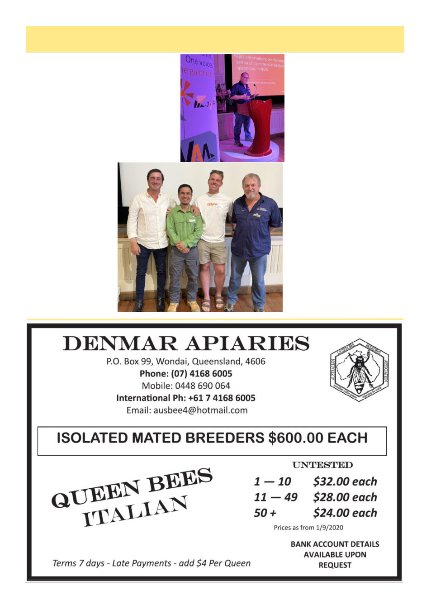

April 2026
9
Swanpool Varroa Workshop
By John Kennedy
ADVANCED VARROA
MANAGEMENT WORKSHOP FOR
COMMERCIAL BEEKEEPERS
JUDGED A GREAT SUCCESS
The VAA and NEAA co-sponsored the
Advanced Varroa Management Workshop
held at Swanpool on Monday March 9.
It was judged a great success with over 80,
mostly
commercial
beekeepers
attend-
ing. VAA Chairman
Lindsay Callaway who
opened and chaired the
workshop said the varroa
mite was quickly on the
move across Victoria as
confirmed by heat maps
and beekeeper’s experi-
ences.
The workshop bore the
title of “From the Smoke
to the Strategy’ and con-
firmed that the VAA
would be working with all
levels of beekeeping to
develop and address all
management solutions.
There
were
13
presentations from indus-
try leaders and VAA directors and
many audience questions. These
were recorded, and after editing I
suspect they will be made available
on the VAA website.
Photo left top: Rod Burke NSW
DPI Senior Apiary Officer, who
drove down from Maitland to give
a NSW perspective on the varroa
mite, where it is two seasons ahead
of Victoria.
He said he had conducted a sur-
vey of all local beekeepers in NSW
to find that the numbers of large
beekeepers had little change, sug-
gesting that they have adapted to
the new treatment regime.
But he found some anomalous
results, including one beekeeper
who was registered with one hive
but actually kept 720, and another
who was not registered but kept
8,000 hives!
Photo left bottom: Amongst the
Workshop presenters were VAA
Board Member Matt Petersen,
VDO Officer Junie Rey Bag-ayan,
VAA Board Member Richard Col-
lins and Rod Burke, NSW DPI
Senior Apiary Officer